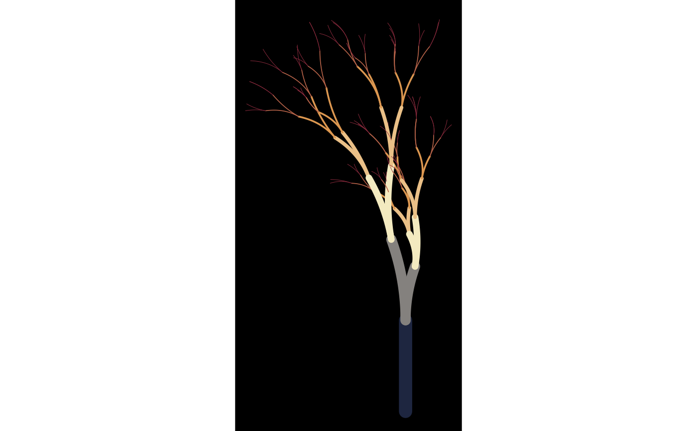
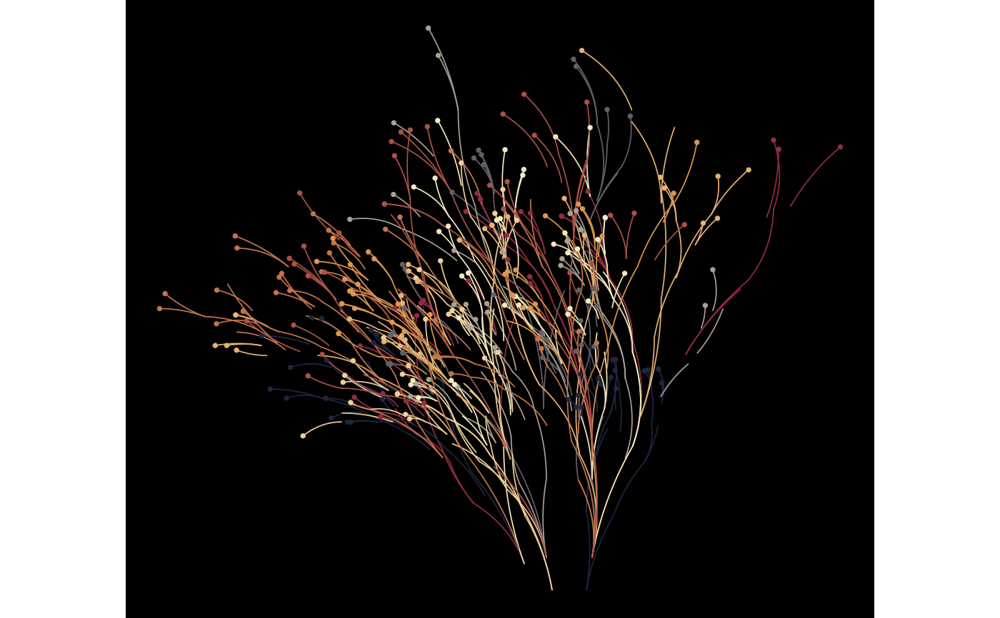
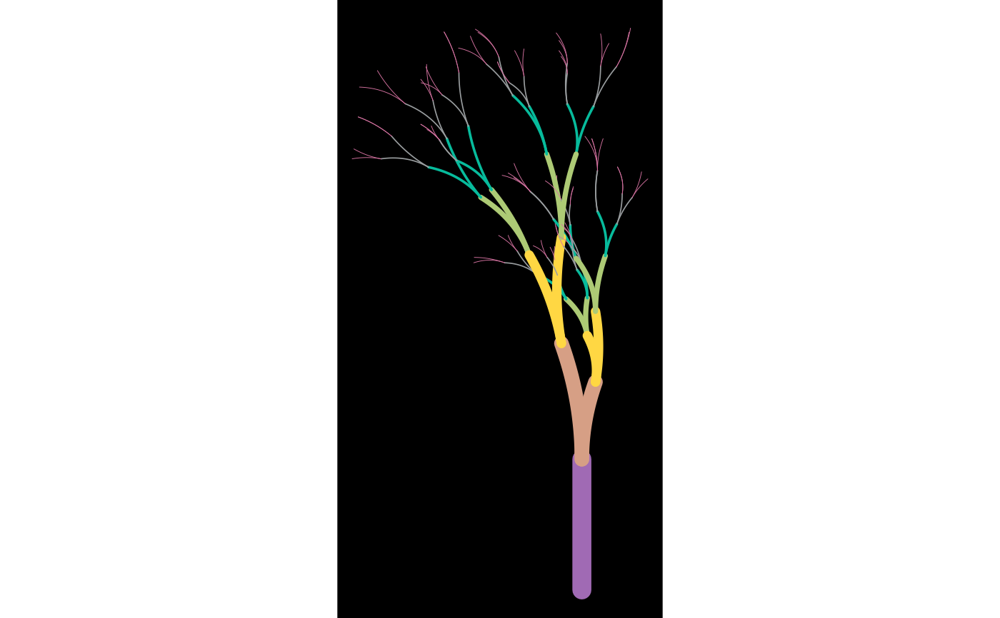

Create a plot from a flametree data frame
Usage
flametree_plot(
data,
background = "black",
palette = c("#1E2640", "#F3EAC0", "#DC9750", "#922C40"),
style = "plain"
)Details
The flametree_plot() function provides several ways to
visualise the data created by the generative system implemented by
flametree_grow(). The background argument sets the background
colour of the image, and should either be a string specifying an RGB hex
colour (e.g., "#000000") or the of a colour recognised by R (see the
colours() function for details). Analogously, the palette
argument should be a vector of colours. However, the palette argument
is interpreted slightly differently depending on which style of plot is
created, discussed below. To set the style of the resulting plot,
pass one of the following style names: "plain" (the default), "voronoi",
"wisp", "nativeflora", "minimal", or "themegray".
Plots in the "plain" style have the following properties. Branches of
the trees vary in width using the seg_wid data column. Each branch
is shown as a curved segment created using geom_bezier2(), and the
colour of the segments is mapped to the seg_col column in the data.
No leaves are drawn. In this style, the elements of the palette are
used to create a continuous n-colour gradient using
scale_colour_gradientn().
Plots in the "voronoi" style draw the shape of the tree the same way as
the plain style, except that the segments do not vary in colour and are
rendered using geom_bezier() instead of geom_bezier2(). Unlike
the plain style, stylised "leaves" are drawn by constructing a Voronoi
tesselation of the terminal nodes in the tree. Note that computing the
tesselation is computationally expensive and this will likely produce
errors if there are too many nodes (typically when the time parameter
to flametree_grow() is large). The interpretation of the
palette argument is slightly different: the first element of the
palette is used to set the colour of the trees, and the rest of the palette
colours are used to create the gradient palette used to colour the tiles
depicted in the Voronoi tesselation.
The style = "nativeflora" style creates a plot in which tree branches
are rendered as thin segments, with a proportion of those segments removed,
and small points are drawn at the end of each terminal segment. The width of
the branches does not vary (i.e., seg_wid is ignored) and the colour
of the branches is constant within tree, but does vary across trees, ignoring
the continuous valued seg_col variable and using only the
id_tree variable to do so. As with the plain style, the
palette colours are used to define an n-colour gradient.
The "wisp" style is similar to nativeflora, but no segments are removed, and
the wdith of the branches is mapped to seg_wid. It only uses the first
two elements of palette: the first element specifies the colour of the
branches, and the second element specifies the colour of the leaf dots.
The final two styles are simplifications of other styles. The "minimal"
style is similar to the plain style but does not use curved segments, relying
on geom_path() to draw the branches. The "themegray" style does this
too, but it ignores the palette argument entirely, rendering the trees
in black, set against the default gray background specified by the ggplot2
theme_gray() function.
Examples
# the default tree in the plain style
flametree_grow() %>% flametree_plot()
#> Warning: Using `size` aesthetic for lines was deprecated in ggplot2 3.4.0.
#> ℹ Please use `linewidth` instead.
#> ℹ The deprecated feature was likely used in the flametree package.
#> Please report the issue at <https://github.com/djnavarro/flametree/issues>.

# 10 trees drawn in the nativeflora style
flametree_grow(trees = 10, shift_x = spark_nothing()) %>%
flametree_plot(style = "nativeflora")

# changing the palette
shades <- c("#A06AB4", "#FFD743", "#07BB9C", "#D773A2")
flametree_grow() %>% flametree_plot(palette = shades)
